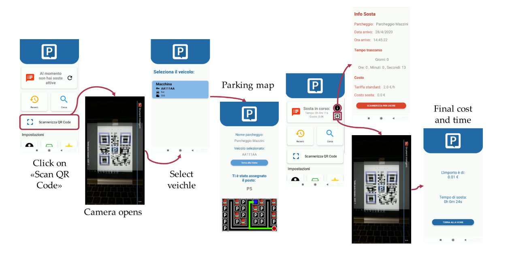

Smart Parking
With Bosch and A2A
In partnership with Bosch, A2A-SmartCity, and
UNIMORE.
Designing a scalable IoT infrastructure and a user-centric
mobile application to solve urban traffic congestion and reduce
environmental impact.
1. Communication & Collaboration
Defining the problem and aligning stakeholders
The Real-World Problem: In the city of Mantova, the search for parking is a major friction point. It generates unnecessary urban traffic, increases CO2 emissions (fuel waste), and causes high frustration for drivers.
The Vision: Transforming 68 standard parking spots in Corso Vittorio Emanuele II into an intelligent network using Bosch IoT sensors communicating via LoRaWAN protocol.
My Role & Collaboration: Bridging the gap between hardware engineering and user experience. I collaborated closely with Bosch engineers to understand data constraints, like LoRaWAN latency, and A2A stakeholders to align the business goals with a seamless Android frontend. I had to synthesize raw sensor data into an intuitive UI that guides users without overwhelming them.
2. Process & User Focus
Strategic trade-offs and human-centered design
When designing the architecture, the primary focus was on the driver. However, working with real-world IoT systems requires making informed trade-offs between ideal user flows and hardware constraints.
The QR Code Trade-off
- The Challenge: While the Bosch sensor detects the physical presence of a vehicle, it cannot identify who is parking. To calculate costs and time, we needed a bridge between the physical car and the digital user profile.
- Strategic Decision: I implemented a QR code scanning step at the beginning of the flow. While an automated system, like camera-based license plate recognition, would reduce friction, the QR code approach ensured strict data privacy compliance and kept hardware implementation costs manageable for the municipality.
- User Impact: The UI guides the user to perform this action safely after securing the spot, linking their app session to that specific sensor's data stream.

3. Problem-Solving & Creativity
Pushing beyond basic routing
Predictive Data Utility: Instead of just offering a reactive "find parking now" feature, I leveraged the backend database to provide predictive analytics. The app visualizes average occupancy trends over 24 hours and specific forecasts for the next 8 hours. This empowers users to plan their trips rather than just react to them.
Reframing for Safety (Future Iterations): Looking at the current flow (App > Scan > Select Vehicle > Map), a critical reframe was identifying the cognitive load on a driving user. To solve this in future iterations, my roadmap includes Voice-UI integration or Android Auto/Apple CarPlay compatibility.

4. Execution & Best Practices
Handling edge cases and measuring success
Handling Asynchronous Edge Cases
IoT systems are not perfect. What happens if the app routes a user to spot "P5", but another driver (without the app) takes it 5 seconds before they arrive?
- UI Fallbacks: I designed states to handle sensor mismatches and connection drops. If the LoRaWAN network detects the spot is taken before the app user arrives, the UI proactively recalculates the route to the next closest spot, preventing user frustration.
Measuring Impact
- Time & Environment: Significant reduction in "cruising time", the time spent looking for parking, directly correlating to lower fuel consumption.
- Continuous Iteration: Initial usability testing revealed the need for higher contrast on the "End Parking" action. I refined the visual hierarchy to ensure granular details like the final cost and elapsed time were the most prominent elements on the checkout screen.